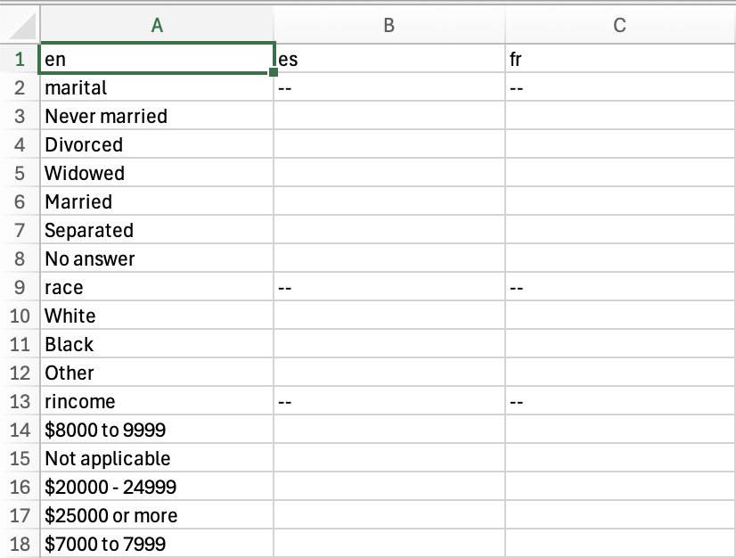
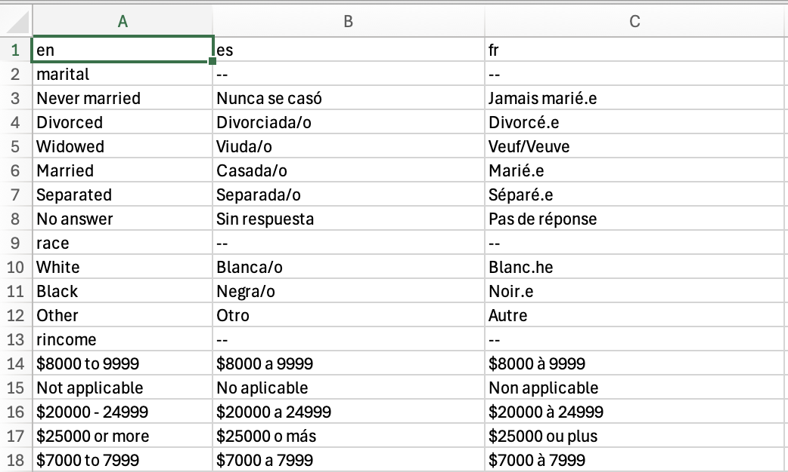

The transcats package is designed to make it easy to
translated categorical, tabular data (and other data with repeated
values) between multiple languages.
Set-Up
For this example, we’ll create a translation table for the variables
in gss_cat, a data table from the General Social Survey
that is include in the package forcats. Here’s a look at
gss_cat:
library(forcats) # loads gss_cat
forcats::gss_cat
#> # A tibble: 21,483 × 9
#> year marital age race rincome partyid relig denom tvhours
#> <int> <fct> <int> <fct> <fct> <fct> <fct> <fct> <int>
#> 1 2000 Never married 26 White $8000 to 9999 Ind,near … Prot… Sout… 12
#> 2 2000 Divorced 48 White $8000 to 9999 Not str r… Prot… Bapt… NA
#> 3 2000 Widowed 67 White Not applicable Independe… Prot… No d… 2
#> 4 2000 Never married 39 White Not applicable Ind,near … Orth… Not … 4
#> 5 2000 Divorced 25 White Not applicable Not str d… None Not … 1
#> 6 2000 Married 25 White $20000 - 24999 Strong de… Prot… Sout… NA
#> 7 2000 Never married 36 White $25000 or more Not str r… Chri… Not … 3
#> 8 2000 Divorced 44 White $7000 to 7999 Ind,near … Prot… Luth… NA
#> 9 2000 Married 44 White $25000 or more Not str d… Prot… Other 0
#> 10 2000 Married 47 White $25000 or more Strong re… Prot… Sout… 3
#> # ℹ 21,473 more rowsNumerical variables—year, age, and
tvhours don’t need a translation, but factor-based
variables do. (Be careful! Some text variables, like
names, geographic locations, and organizations, might not need to be
translated, depending on the context and languages involved.) This code
creates a short list of those variable names:
# select names of all of the factor and character variables
# in gss_cat
gss_cat %>% dplyr::select(where(~ is.factor(.x) || is.character(.x))) %>%
names() -> gss_cat_trans_variables
gss_cat %>% dplyr::select(where(~ is.numeric(.x))) %>%
names() -> gss_cat_num_variables
gss_cat_trans_variables
#> [1] "marital" "race" "rincome" "partyid" "relig" "denom"To work on this with transcats, we set the source
language to English and name destination languages using
set_source_lang and set_dest_lang_list,
choosing Spanish and French. Note that these language codes are
two-letter shortcodes by convention, not requirement. Just work to be
consistent across a project. You may also use longer language codes, or
modify language codes to indicate variations. The package uses
r_variable as a language code to designate variable
names.
set_source_lang("en")
set_dest_lang_list(c("es", "fr"))Creating a translation table
Translation in transcats is done with manually created
or verified translation tables for each possible value of the variable
in question. The function create_blank_translation_table
creates a table for one variable:
marital_trans_table <- create_blank_translation_table(gss_cat, "marital")
marital_trans_table
#> en es fr
#> 1 No answer
#> 2 Never married
#> 3 Separated
#> 4 Divorced
#> 5 Widowed
#> 6 MarriedThe slightly differently named
create_blank_translation_tables (with a final
s) creates a cluster of such tables, given a list of
variables. By default, this merges the tables into one long dataframe
that can be exported for translation by hand.
gss_translation_combined <- create_blank_translation_tables(gss_cat,
gss_cat_trans_variables)
gss_translation_combined
#> en es fr
#> 1 marital -- --
#> 2 No answer
#> 3 Never married
#> 4 Separated
#> 5 Divorced
#> 6 Widowed
#> 7 Married
#> 8 race -- --
#> 9 Other
#> 10 Black
#> 11 White
#> 12 Not applicable
#> 13 rincome -- --
#> [ reached 'max' / getOption("max.print") -- omitted 75 rows ]With different preferences, this table can be put directly in the
transcats preferred translation table-list format. (But the
blank entries mean this won’t work for translation.)
gss_translation <- create_blank_translation_tables(gss_cat, gss_cat_trans_variables, combine_tables = FALSE)
gss_translation
#> $marital
#> en es fr
#> 1 marital -- --
#> 2 No answer
#> 3 Never married
#> 4 Separated
#> 5 Divorced
#> 6 Widowed
#> 7 Married
#>
#> $race
#> en es fr
#> 1 race -- --
#> 2 Other
#> 3 Black
#> 4 White
#> 5 Not applicable
#>
#> $rincome
#> en es fr
#> 1 rincome -- --
#> 2 No answer
#> 3 Don't know
#> 4 Refused
#> 5 $25000 or more
#> 6 $20000 - 24999
#> 7 $15000 - 19999
#> 8 $10000 - 14999
#> [ reached 'max' / getOption("max.print") -- omitted 9 rows ]
#>
#> $partyid
#> en es fr
#> 1 partyid -- --
#> 2 No answer
#> 3 Don't know
#> 4 Other party
#> 5 Strong republican
#> 6 Not str republican
#> 7 Ind,near rep
#> 8 Independent
#> [ reached 'max' / getOption("max.print") -- omitted 3 rows ]
#>
#> $relig
#> en es fr
#> 1 relig -- --
#> 2 No answer
#> 3 Don't know
#> 4 Inter-nondenominational
#> 5 Native american
#> 6 Christian
#> 7 Orthodox-christian
#> 8 Moslem/islam
#> [ reached 'max' / getOption("max.print") -- omitted 9 rows ]
#>
#> $denom
#> en es fr
#> 1 denom -- --
#> 2 No answer
#> 3 Don't know
#> 4 No denomination
#> 5 Other
#> 6 Episcopal
#> 7 Presbyterian-dk wh
#> 8 Presbyterian, merged
#> [ reached 'max' / getOption("max.print") -- omitted 23 rows ]Editing the translation table externally
Now we can write the combined table into an external file, available for editing via an external text editor or spreadsheet program.
do_not_run <- TRUE
if(!do_not_run){
readr::write_excel_csv(
gss_translation_combined,
"inst/extdata/gss_cat_transtable.csv")
}Editing by hand, or using machine translation and then editing the results, we fill in the table.

The completed .csv can be imported back into R. Use
parse_combined_translation_table to turn the combined list
into a transcats list of translation tables.
library(fs)
gss_translation_combined <-
readr::read_csv(fs::path_package("extdata", "gss_cat_transtable_complete.csv",
package = "transcats"))
#> Rows: 86 Columns: 3
#> ── Column specification ────────────────────────────────────────────────────────
#> Delimiter: ","
#> chr (3): en, es, fr
#>
#> ℹ Use `spec()` to retrieve the full column specification for this data.
#> ℹ Specify the column types or set `show_col_types = FALSE` to quiet this message.
gss_translation <- parse_combined_translation_table(gss_translation_combined)
gss_translation
#> $marital
#> # A tibble: 6 × 3
#> en es fr
#> <chr> <chr> <chr>
#> 1 Never married Nunca se casó Jamais marié.e
#> 2 Divorced Divorciada/o Divorcé.e
#> 3 Widowed Viuda/o Veuf/Veuve
#> 4 Married Casada/o Marié.e
#> 5 Separated Separada/o Séparé.e
#> 6 No answer Sin respuesta Pas de réponse
#>
#> $race
#> # A tibble: 3 × 3
#> en es fr
#> <chr> <chr> <chr>
#> 1 White Blanca/o Blanc.he
#> 2 Black Negra/o Noir.e
#> 3 Other Otro Autre
#>
#> $rincome
#> # A tibble: 16 × 3
#> en es fr
#> <chr> <chr> <chr>
#> 1 $8000 to 9999 $8000 a 9999 $8000 à 9999
#> 2 Not applicable No aplicable Non applicable
#> 3 $20000 - 24999 $20000 a 24999 $20000 à 24999
#> 4 $25000 or more $25000 o más $25000 ou plus
#> 5 $7000 to 7999 $7000 a 7999 $7000 à 7999
#> 6 $10000 - 14999 $10000 a 14999 $10000 à 14999
#> 7 Refused Rechazado Refusé
#> 8 $15000 - 19999 $15000 a 19999 $15000 à 19999
#> 9 $3000 to 3999 $3000 a 3999 $3000 à 3999
#> 10 $5000 to 5999 $5000 a 5999 $5000 à 5999
#> 11 Don't know No sabe Ne sait pas
#> 12 $1000 to 2999 $1000 a 2999 $1000 à 2999
#> 13 Lt $1000 Menos que $1000 Moins de $1000
#> 14 No answer Sin respuesta Pas de réponse
#> 15 $6000 to 6999 $6000 a 6999 $6000 à 6999
#> 16 $4000 to 4999 $4000 a 4999 $4000 à 4999
#>
#> $partyid
#> # A tibble: 10 × 3
#> en es fr
#> <chr> <chr> <chr>
#> 1 Ind,near rep Independiente, casi republicana/o Indépendant.e, proche d…
#> 2 Not str republican Republicana/o, no fuerte Républicain.e, pas fort…
#> 3 Independent Independiente Indépendant.e
#> 4 Not str democrat Demócrata, no fuerte Démocrate, pas fort.e
#> 5 Strong democrat Demócrata fuerte Démocrate fort.e
#> 6 Ind,near dem Independiente, casi demócrata Indépendant.e, proche d…
#> 7 Strong republican Republicana/o fuerte Républicain.e fort.e
#> 8 Other party Otro partido Autre parti politique
#> 9 No answer Sin respuesta Pas de réponse
#> 10 Don't know No sabe Ne sait pas
#>
#> $relig
#> # A tibble: 15 × 3
#> en es fr
#> <chr> <chr> <chr>
#> 1 Protestant Protestante Protestant
#> 2 Orthodox-christian Cristiano ortodoxo Chrétien orthodoxe
#> 3 None Ninguno Aucune religion
#> 4 Christian Cristiano Chrétien
#> 5 Jewish Judío Juif
#> 6 Catholic Católico Catholique
#> 7 Other Otro Autre
#> 8 Inter-nondenominational Interconfesional Interconfessionnel
#> 9 Hinduism Hindú Hindou
#> 10 Native american Indígena americano Amérindien
#> 11 No answer Sin respuesta Pas de réponse
#> 12 Buddhism Budista Bouddhiste
#> 13 Moslem/islam Musulmán Musulman
#> 14 Other eastern Otra religión oriental Autre religion orientale
#> 15 Don't know No sabe Ne sait pas
#>
#> $denom
#> # A tibble: 30 × 3
#> en es fr
#> <chr> <chr> <chr>
#> 1 Southern baptist Bautista del Sur Baptiste du Sud
#> 2 Baptist-dk which Bautista, no sabe cuál Baptiste, ne sait pas leq…
#> 3 No denomination Sin denominación Aucune dénomination
#> 4 Not applicable No corresponde Sans objet
#> 5 Lutheran-mo synod Sínodo luterano-misuri Synode luthérien-Missouri
#> 6 Other Otro Autre
#> 7 United methodist Metodista unido Méthodiste uni
#> 8 Episcopal Episcopal Épiscopal
#> 9 Other lutheran Otro luterano Autre luthérien
#> 10 Afr meth ep zion African Methodist Episcopal Zion Méthodiste africain Épisc…
#> # ℹ 20 more rowsThe imported translation table is now available to do data
translation using translated_join_vars.
Translating categorical data
set_active_translation_table(gss_translation)
set_source_lang("en")
set_dest_lang("fr")
gss_cat_2 <- translated_join_vars(gss_cat, gss_cat_trans_variables)
gss_cat_fr <- gss_cat_2 %>% dplyr::select(-all_of(gss_cat_trans_variables))
# reorder to match original
gss_cat_fr <- gss_cat_fr %>% dplyr::relocate(age, .after="marital_fr") %>%
dplyr::relocate(tvhours, .after="denom_fr")
# gss_cat_fr_variables <- gLet’s compare the input and and output:
| year | marital | age | race | rincome | partyid | relig | denom | tvhours |
|---|---|---|---|---|---|---|---|---|
| 2000 | Never married | 26 | White | $8000 to 9999 | Ind,near rep | Protestant | Southern baptist | 12 |
| 2000 | Divorced | 48 | White | $8000 to 9999 | Not str republican | Protestant | Baptist-dk which | NA |
| 2000 | Widowed | 67 | White | Not applicable | Independent | Protestant | No denomination | 2 |
| 2000 | Never married | 39 | White | Not applicable | Ind,near rep | Orthodox-christian | Not applicable | 4 |
| 2000 | Divorced | 25 | White | Not applicable | Not str democrat | None | Not applicable | 1 |
| 2000 | Married | 25 | White | $20000 - 24999 | Strong democrat | Protestant | Southern baptist | NA |
| 2000 | Never married | 36 | White | $25000 or more | Not str republican | Christian | Not applicable | 3 |
| 2000 | Divorced | 44 | White | $7000 to 7999 | Ind,near dem | Protestant | Lutheran-mo synod | NA |
| 2000 | Married | 44 | White | $25000 or more | Not str democrat | Protestant | Other | 0 |
| 2000 | Married | 47 | White | $25000 or more | Strong republican | Protestant | Southern baptist | 3 |
| 2000 | Married | 53 | White | $25000 or more | Not str democrat | Protestant | Other | 2 |
| 2000 | Married | 52 | White | $25000 or more | Ind,near rep | None | Not applicable | NA |
| year | marital_fr | age | race_fr | rincome_fr | partyid_fr | relig_fr | denom_fr | tvhours |
|---|---|---|---|---|---|---|---|---|
| 2000 | Jamais marié.e | 26 | Blanc.he | $8000 à 9999 | Indépendant.e, proche du républicain.e | Protestant | Baptiste du Sud | 12 |
| 2000 | Divorcé.e | 48 | Blanc.he | $8000 à 9999 | Républicain.e, pas fort.e | Protestant | Baptiste, ne sait pas lequel | NA |
| 2000 | Veuf/Veuve | 67 | Blanc.he | Non applicable | Indépendant.e | Protestant | Aucune dénomination | 2 |
| 2000 | Jamais marié.e | 39 | Blanc.he | Non applicable | Indépendant.e, proche du républicain.e | Chrétien orthodoxe | Sans objet | 4 |
| 2000 | Divorcé.e | 25 | Blanc.he | Non applicable | Démocrate, pas fort.e | Aucune religion | Sans objet | 1 |
| 2000 | Marié.e | 25 | Blanc.he | $20000 à 24999 | Démocrate fort.e | Protestant | Baptiste du Sud | NA |
| 2000 | Jamais marié.e | 36 | Blanc.he | $25000 ou plus | Républicain.e, pas fort.e | Chrétien | Sans objet | 3 |
| 2000 | Divorcé.e | 44 | Blanc.he | $7000 à 7999 | Indépendant.e, proche du démocrate | Protestant | Synode luthérien-Missouri | NA |
| 2000 | Marié.e | 44 | Blanc.he | $25000 ou plus | Démocrate, pas fort.e | Protestant | Autre | 0 |
| 2000 | Marié.e | 47 | Blanc.he | $25000 ou plus | Républicain.e fort.e | Protestant | Baptiste du Sud | 3 |
| 2000 | Marié.e | 53 | Blanc.he | $25000 ou plus | Démocrate, pas fort.e | Protestant | Autre | 2 |
| 2000 | Marié.e | 52 | Blanc.he | $25000 ou plus | Indépendant.e, proche du républicain.e | Aucune religion | Sans objet | NA |